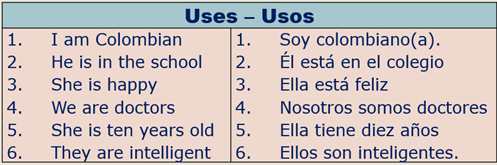
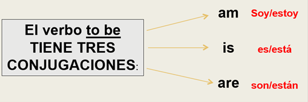
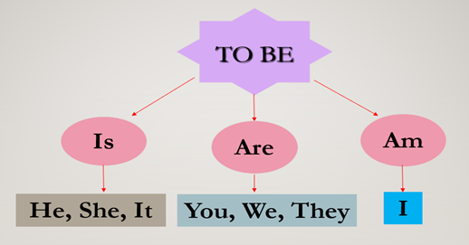

VERBO TO BE- CONOCIMIENTO PREVIO
OBJETIVO: Utilizar de manera correcta el verbo to be en el tiempo gramatical presente simple.
El verbo to be tiene varios significados en inglés, por lo que en muchas ocasiones su significado depende del contexto en el que se encuentre. Los más comunes son: ser y estar. En ingles se escriben de la siguiente manera: is, are, am y se debe tener en cuenta los pronombres personales para utilizarlos.
1. Ser: He is smart = Él es inteligente
2. Estar: I am in the school today = Estoy en el colegio hoy
Su uso es variado: Sirve para mencionar una acción, ubicación, estado de ánimo, información personal, edad, o características del sujeto.

Conjugación del verbo to be
En este caso vamos a ver la conjugación del verbo to be en presente en el siguiente cuadro:

Su estructura gramatical es:
Sujeto o Pronombre personal + verbo to be + complemento

Apreciado estudiante, observe detenidamente los videos "Aprende Inglés con Mr Pea," y "Expresiones con el verbo To be" los cuales te mostrarán información relevante e importante relacionada con el tema que se va a trabajar.